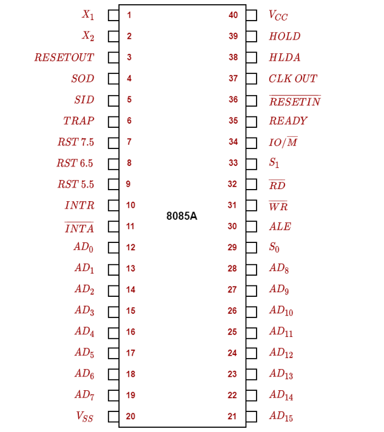

|
DEFINITION: 8085 is an 8-bit microprocessor as it operates on 8 bits.The size of the address bus in 8085 is 16 bits. Thus,can address 64 KB memory.
An 8085 microprocessor
is an IC With 40 pins and operates with +5V power supply. The pin configuration plays a very important role in understanding
the architcture
of 8085 microprocessor. So,now let's move further and understand how the processor operates inside any system with these 40 pins.

|